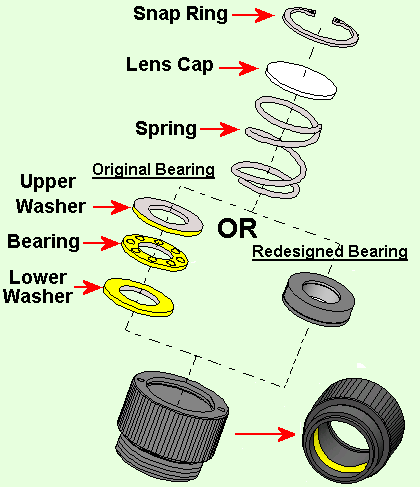

This procedure describes how to disassemble and lubricate the valve cap on the wash, sample, and precision pumps.
Use these special tools and materials to perform this procedure:
Snap-ring pliers
Non-cotton tipped swabs
Teflon grease (P/N 7596A)
Caution: Do not use #2 Lithium grease for this application because it migrates away from where it was initially placed.
Disassemble and lubricate the valve cap on a wash, sample, or precision pump when:
errors occur related to pump or valve motion.
performing preventive maintenance to reduce the number of service calls related to sticky valves.
Figure 258: Lubricating valve cap (areas requiring lubrication indicated in yellow)

Remove, disassemble, and inspect the valve cap.
Remove the valve cap from the pump and valve assembly.
Caution: Before removing the valve cap, place a lint-free towel under the probes to catch the fluid that might leak out when the cap is removed.
Use the snap-ring removal tool to remove the snap-ring on top of the valve cap.
Warning: To avoid eye injury, wear eye protection while performing this step.
Caution: To prevent the internal spring from expanding, maintain pressure on the clear lens during removal of the snap-ring.
Carefully allow the spring to expand and lift the clear lens cap out of the assembly.
Remove all of the valve cap internal parts.
(For original bearings only) Inspect the lower metal washer for wear marks and tracks from the ball bearings.
(For original bearings only) Inspect the washer surface. If there are deep tracks in the washer surface, replace the entire cap assembly.
Note: The washer can be flipped until a new cap is available.
Lubricate, assemble, and install the ORIGINAL valve cap.
Apply a light layer of lubrication to the lower inside surface of the cap housing above the step using a non-cotton tipped swab.
Note: Apply the lubrication a maximum of 1/4 inch from the bottom of the housing.
Apply a light layer of lubrication to the upper surface of the lower flat metal washer and insert the washer into the housing with the lubricated side facing upward.
Apply a light layer of lubrication to top and bottom sides of the ball bearings and insert the ball bearings into the cap housing.
Apply a light layer of lubrication to the lower surface of the upper flat metal washer and insert the washer into the housing with the lubricated side facing downward.
Assemble the remaining parts into the housing as shown in the reference drawing.
Install the snap ring to complete the reassembly.
Inspect the cap for lubricant. Confirm that there is no lubricant on any outer surface of the cap or the lower washer.
Remove any excess lubricant.
Install the lubricated cap onto the pump and valve assembly, and then tighten the cap.
Lubricate, assemble, and install the REDESIGNED valve cap.
Apply a light layer of lubrication to the lower inside surface of the cap housing above the step using a non-cotton tipped swab.
Note: Apply the lubrication a maximum of 1/4 inch from the bottom of the housing.
Insert the bearing into the housing with the grooved end downward.
Assemble the remaining parts into the housing as shown in the reference drawing.
Install the snap ring to complete the reassembly.
Inspect the cap for lubricant. Confirm that there is no lubricant on any outer surface of the cap or the lower washer.
Remove any excess lubricant.
Install the lubricated cap onto the pump and valve assembly, and then tighten the cap.
Verify proper operation of the valve cap.
Using Diagnostics, move the valve to the pipettor or probe and supply locations to verify that the valve operates freely and without error.
Perform five prime cycles of the pump and valve assembly.